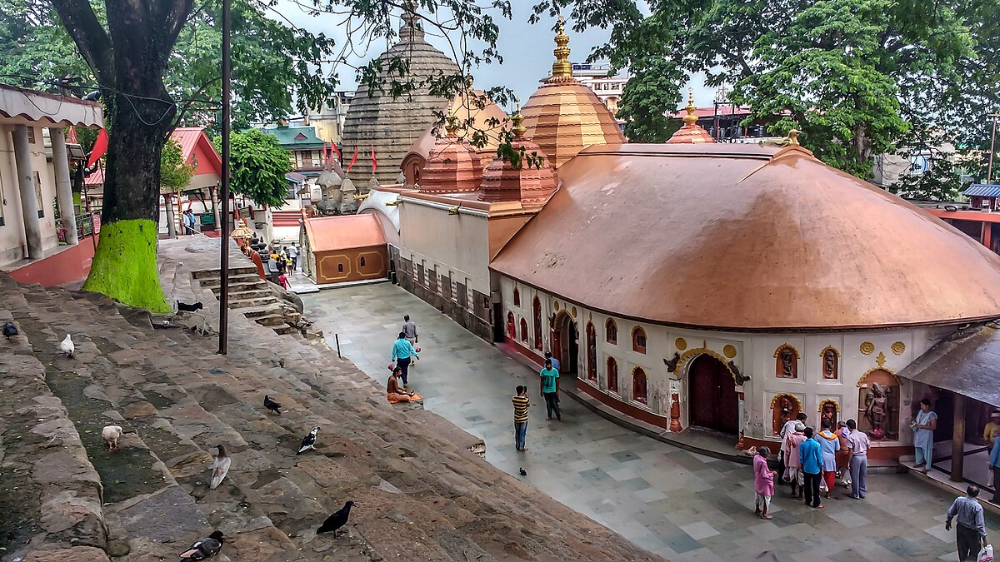
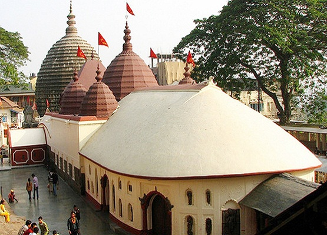

Kamakhya Temple


Kapilash Temple
The Kamakhya Temple at Nilachal hills in Guwahati, Assam is one of the oldest and most revered centres of Tantric practices,[3] dedicated to the goddess Kamakhya. The temple is the center of the Kulachara Tantra Marga and the site of the Ambubachi Mela, an annual festival that celebrates the menstruation of the goddess.[4] Structurally, the temple is dated to the 8th-9th century with many subsequent rebuildings[5]—and the final hybrid architecture defines a local style called Nilachal.[6] It is also one among the oldest 4 of the 51 pithas in the Shakta tradition.[7][8] An obscure place of worship for much of history it became an important pilgrimage destination, especially for those from Bengal, in the 19th century during colonial rule.
Originally an autochthonous place of worship of a local goddess where the primary worship of the aniconic yoni set in natural stone continues till today,[10] the Kamakya Temple became identified with the state power when the Mleccha dynasty of Kamarupa patronised it first, followed by the Palas, the Koch, and the Ahoms.[11] The Kalika Purana, written during the Pala rule, connected Naraka, the legitimizing progenitor of the Kamarupa kings, with the goddess Kamakhya representing the region and the Kamarupa kingdom.
It has been suggested that historically the worship progressed in three phases—yoni under the Mlechhas, yogini under the Palas and the Mahavidyas under the Kochs.[13] The main temple is surrounded in a complex of individual temples dedicated to the ten Mahavidyas of Saktism, namely, Kali, Tara, Tripura Sundari, Bhuvaneshwari, Bhairavi, Chhinnamasta, Dhumavati, Bagalamukhi, Matangi and Kamalatmika.[14] Among these, Tripurasundari, Matangi and Kamala reside inside the main temple whereas the other seven reside in individual temples.[15] Temples for individual Mahavidyas together as a group, as found in the complex, is rare and uncommon.
In July 2015, the Supreme Court of India transferred the administration of the Temple from the Kamakhya Debutter Board to the Bordeuri Samaj
Description
The current structural temple and the rock-cut sculpture strewn in the vicinity indicate that the temple has been built and renovated many times in the period 8th–9th, 11th–12th, 13th–14th centuries and even later.[5] The current form, from the 16th century has given rise to a hybrid indigenous style that is sometimes called the Nilachal type: a temple with a hemispherical dome on a cruciform base.
Shikhara and garbhagriha
The shikhara over the garbhagriha has a pancharatha plan[18] that rests on plinth moldings that are similar to the Surya Temple at Tezpur. On top of the plinths are dados from a later period which are of the Khajuraho or the Central Indian type, consisting of sunken panels alternating with pilasters.[19] The panels have delightful sculptured Ganesha and other Hindu gods and goddesses.[20] Though the lower portion is of stone, the shikhara in the shape of a polygonal beehive-like dome is made of brick, which is characteristic of temples in Kamrup.[21] The shikhara is circled by a number of minaret inspired angashikaras of Bengal type charchala.
The inner sanctum within the shikhara, the garbhagriha, is below ground level and consists of no image but a rock fissure in the shape of a yoni (female genital).
The garbhagriha is small, dark and reached by narrow steep stone steps. Inside the cave there is a sheet of stone that slopes downwards from both sides meeting in a yoni-like depression some 10 inches deep. This hollow is constantly filled with water from an underground perennial spring. It is the vulva-shaped depression that is worshiped as the goddess Kamakhya herself and considered as most important pitha (abode) of the Devi.
Calanta, Pancharatna, and Natamandir
The temple consists of three additional chambers. The first to the west is the calanta, a square chamber of type atchala (similar to the 1659 Radha-Vinod Temple of Bishnupur[24]). The entrance to the temple is generally via its northern door, that is of Ahom type dochala. It houses a small movable idol of the Goddess, a later addition, which explains the name.[25] The walls of this chamber contain sculpted images of Nar Narayana, related inscriptions and other gods.
The natamandira extends to the west of the pancharatna with an apsidal end and ridged roof of the Ranghar type Ahom style. Its inside walls bear inscriptions from Rajeswar Singha (1759) and Gaurinath Singha (1782), which indicate the period this structure was built.[27] The outer wall has stone sculptures from an earlier period embedded in high relief
History
Site of Kamakhya
Historians have suggested that the Kamakhya temple was likely an ancient sacrificial site for Khasi and Garo peoples and that the name originates in the Khasi goddess, Ka Meikha (literally: old-cousin-mother);[29] and these claims are supported by the folklores of these very peoples.[30] The traditional accounts from Kalika Purana (10th century) and the Yogini Tantra too record that the goddess Kamakhya is of Kirata origin,[31] and that the worship of Kamakhya predates the establishment of Kamarupa (4th century CE).
Ancient
The earliest historical dynasty of Kamarupa, the Varmans (350–650), as well as Xuanzang, a 7th-century Chinese traveler, do not mention Kamakhya; and it is assumed that the worship at least till that period was Kirata-based beyond the brahminical ambit.[33] The Hevajra Tantra, one of the oldest Buddhist tantras probably from the 8th century, makes a reference to Kamarupa as a pitha,[34] whereas the first epigraphic notice of the goddess Kamakhya is found in the 9th-century Tezpur plates of Vanamalavarmadeva of the Mlechchha dynasty.[35] Art historians suggest that the archaeological remains and the lower strata of the temple indicate an older structure that could be as old as 5th- to 7th-century.[36] The importance to Kamakhya that the Mlechchha dynasty gave it suggests that they either constructed or reconstructed it.[1] From the moldings of the plinth and the bandhana, the original temple was clearly of Nagara type possibly of the Malava style.
Medieval
There is a tradition that the temple was destroyed by Kalapahar, a general of Sulaiman Karrani (1566–1572). Since the date of reconstruction (1565) precedes the possible date of destruction, and since Kalapahar is not known to have ventured so far to the east, it is now believed that the temple was destroyed not by Kalapahar but during Hussein Shah's invasion of the Kamata kingdom (1498).
The ruins of the temple was said to have been discovered by Vishwasingha (1515–1540), the founder of the Koch dynasty, who revived worship at the site; but it was during the reign of his son, Nara Narayan (1540–1587), that the temple reconstruction was completed in 1565. According to historical records and epigraphic evidence, the main temple was built under the supervision of Chilarai.[39] The reconstruction used material from the original temples that was lying scattered about, some of which still exists today. After two failed attempts at restoring the stone shikhara Meghamukdam, a Koch artisan, decided to take recourse to brick masonry and created the current dome.[40] Made by craftsmen and architects more familiar with Islamic architecture of Bengal, the dome became bulbous and hemispherical which was ringed by minaret-inspired angashikharas.[6] Meghamukdam's innovation—a hemispherical shikhara over a ratha base—became its own style, called Nilachal-type, and became popular with the Ahoms.
Banerji (1925) records that the Koch structure was further built over by the rulers of the Ahom kingdom.[42][43] with remnants of the earlier Koch temple carefully preserved.[44][45] By the end of 1658, the Ahoms under king Jayadhvaj Singha had conquered the Kamrup and after the Battle of Itakhuli (1681) the Ahoms had uninterrupted control over the temple. The kings, who were supporters of Shaivite or Shakta continued to support the temple by rebuilding and renovating it.
Rudra Singha (1696–1714) invited Krishnaram Bhattacharyya, a famous mahant of the Shakta sect who lived in Malipota, near Santipur in Nadia district, promising him the care of the Kamakhya temple to him; but it was his successor and son Siba Singha (1714–1744), on becoming the king, who fulfilled the promise. The Mahant and his successors came to be known as Parbatiya Gosains, as they resided on top of the Nilachal hill. Many Kamakhya priests and modern Saktas of Assam are either disciples or descendants of the Parbatiya Gosains, or of the Nati and Na Gosains.